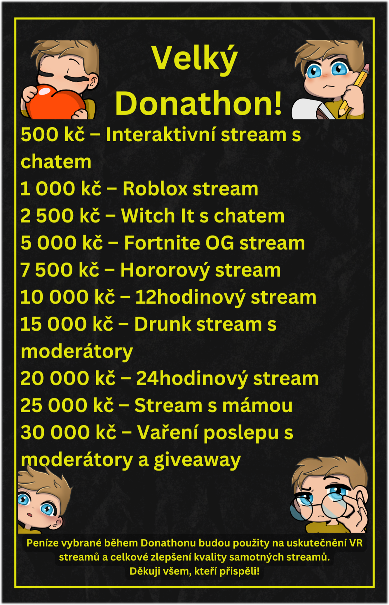

Donathon
Donathon je založen na
DOBROVOLNÝCH příspěvcích
Tyto příspěvky se sčítají do celkové částky
Jakmile celková částka dosáhne konkrétní hranice, splní se
odpovídající cíl na nejbližším streamu.
Podpořit Donathon můžete
ZDE
Nebo můžete podpořit i přímo na streamu pomocí příkazu
!donathon
Akce končí 17.2.2025

Grafika made by
DevilLizz
Splněné cíle
500 - Interaktivní stream s chatem - 14.01.2025 ✅
1000 - Roblox stream - TODO
... další splněné cíle zde budou později vypsány ...